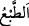

“Andolsun ki biz, bu Kur’an’da insanlar için her çeşit misale yer vermişizdir.”
Yâni, Allâh’a yemin olsun ki biz onlara her hâli beyan ettik ve her sıfatı tanıttık. Sanki
bunlar eşsizlikte meseller gibidir. Bunlar tefekkür eden kimsenin kendileriyle doğru
yolu bulacağı, bakıp düşünen kimsenin kendilerinden ibret alacağı tevhîd, haşr,
peygamberlerin doğruluğu ve insanların din ve dünyâ işlerinden ihtiyaç duydukları diğer
hususlardır.
Ey Muhammed (a.s.) “Şâyet onlara” münkirlere ve inatçılara, buna benzer hususları
anlatan Kur’an âyetlerinden “bir âyet getirsen inkârcılar kesinlikle” inatlarının ve
kalblerinin katılığının fazlalığından Nebî (a.s.)’a ve mü’minlere hitaben “şöyle
diyeceklerdir: Siz ancak bâtıl şeyler ortaya atmaktasınız.” Siz ancak yalanı süsleyip
gerçek diye yutturan kimeselersiniz.
Bir kimse bâtıl şeyler ortaya koyduğu zaman “
”, yalan şeyler ortaya
koyduğunda ise “
” denir. el-Müfredât’ta der ki: “Bir şey hak olsun veya bâtıl
olsun onu ifsâd etmek ve ortadan kaldırmak için “
” kelimesi kullanılır. Nitekim
Allah Teâlâ “Hakkı gerçekleştirmek ve bâtılı ortadan kaldırmak için…” (el-Enfâl,
8/8) buyurmuştur. Hakikatı olmayan bir şey söyleyen kimse için de bu kelime kullanılır.
Nitekim Allah Teâlâ “Siz ancak bâtıl şeyler ortaya atmaktasınız.” buyurmuştur.
59. İşte bilmeyenlerin (hakkı tanımayanların) kalplerini Allah böylece mühürler.
“İşte bilmeyenlerin” ilim talebinde bulunmayan ve inandıkları hurâfelerde ve
uydurdukları yalanlarda ısrar edenlerin “kalplerini Allah böylece” yâni bu korkunç
mühürlemede olduğu gibi inkârı seçmeleri sebebiyle “mühürler.” Çünkü cehl-i
mürekkeb hakkı idrâke mâni olur ve hak üzere olan kimseyi yalanlamayı gerektirir.
Bilesin ki “
(tab‘)”, bir şeye herhangi bir sûrette şekil vermektir. Sikke/madeni
para basmak ve dirhem basmak gibi. Bu kelime “
(mühürlemek)”ten daha genel, “
(nakşetmek)”ten daha özeldir. “
” ve “
” kendisiyle tab ve mühür yapılan
şey demektir. “
” de bu işi yapandır. Seciyye anlamındaki “
” ve “
” da bu
kökle ifâde edilmiştir. Çünkü seciye nefsin ya yaratılış bakımından ya da alışkanlık
bakımından herhangi bir sûret ile nakşolunmasıdır. Onun yaratılış cihetinden
nakşolunması daha çoktur. Doğru düşünceden yüz çevirmeleri sebebiyle Allah Teâlâ’nın
kâfirlerin nefislerinde onları inkârı ve günahları sevmeye, îmânı ve tâatleri çirkin
görmeye alıştıran bir hal yaratması, kapların ve benzerlerinin üzerini mühürlemeye ve
tab etmeye benzetilmiştir. Kapların ve benzerlerinin üzerinin mühürlenmesi onlarda
tasarrufta bulunmaya mâni olduğu gibi kâfirlerde yaratılan bu hal de hakkın onların